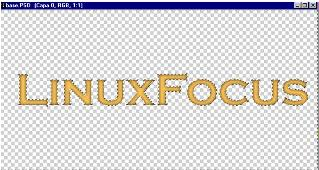

Abrirmos una nueva imagen del tamaño y resolución que queramos. Si
vamos a trabajar para una página web o pantalla de monitor la
resolución será 72 pixels/cm.
En Photoshop, antes de comenzar a trabajar es aconsejable
conseguirse una paleta de colores. Está en la página de Adobe en la cual tendremos los colores
comunes para Pc y Mac. Así sabremos (con bastante aproximación) que
lo que nosotros estamos viendo en nuestra pantalla se asemeja bastante
a lo que verá nuestro lector en la suya. No todas las plataformas, y
marcas interpretan los colores de la misma manera.
Una vez tengamos nuestra paleta cargada y la imagen abierta ya
podemos comenzar.
- Rellenamos la primera capa de blanco.
- Escribimos el texto que queremos (es conveniente que sea una
letra gruesa de palo seco, porque no queremos que al aplicar muchos
efectos se haga ilegible).
|
|
|
- Si al crear el texto nos crea una capa nueva, la acoplamos con el
fondo blanco.
- Hacemos una copia de esta capa.
- Después la invertimos (es decir, hacemos que lo que es blanco o
claro se vuelva negro o oscuro).
|
- Ahora aplicamos un desenfoque gausiano. La cantidad que tendremos
que aplicar dependerá de la resolución en la que estemos trabajando.
Para una imagen de 10x5 cm a 72 pixels/cm de resolución bastará con 3
o 4 pixels.
|
|
|
- ¡Llega el momento de jugar!!! Podemos ir probando a combinar las
capas. Así veremos los efectos que producen las distintas operaciones
de capa como multiplicar, dividir, luz intensa, luz suave,
luminosidad.
Para este ejemplo yo he elegido dividir y ¡aquí está! Chulo y
sencillo. Pero eso no es todo.
- Como podéis apreciar, lo que nos ha hecho esta combinación es
dejar pasar ligeramente el negro sólo en las partes en las que
teníamos desenfocados los bordes.
|
- Una vez tengamos todo esto, juntamos las dos capas en una, sin
acoplar la imagen del todo. Seleccionamos la varita mágica. Y en
opciones elegimos una tolerancia pequeña para seleccionar sólo el
fondo blanco, por ejemplo, 10. Luego seleccionamos todo el fondo y el
hueco de la "o". Cuando lo tengamos todo seleccionado, lo borramos.
|
|
|
- Después creamos una copia de la capa. Ocultamos la capa
superior. Pulsamos preservar transparencia para pintar sólo sobre las
letras, y lo rellenamos con un color rojo.
- Aquí podemos hacer varias cosas para obtener un buen resultado:
|
|
Podemos rellenar la letras que están al fondo de cualquier color,
varios colores o incluso de una textura, y si nos vamos a la capa
superior (con bordes difuminados) la podemos combinar de dos
maneras. Bien multiplicandola ....
|
|
|
.... O como luz suave. El efecto que produce es completamente diferente pero el resultado
es igual de excelente.
|
|
|
Si se realiza con una textura obtenemos unas letras increíbles ....
|
|
|
- Ya tenemos las letras principales. Incluso así el resultado
podría ser excelente para un título o un texto en nuestra Web. Ahora
vamos a realizar un poco de incandescencia en el texto. Eso nos dará
todavía más resalte.
- Primero combinamos ambas capas. Nos quedarán en modo de capa
normal que es el que necesitamos.
|
-
Ahora seleccionamos el fondo (que es más sencillo que seleccionar
las letras). Para seleccionarlo usamos la varita mágica y
seleccionamos "similar". Así seleccionará todo ...
|

|
|
- Vamos a crear una capa nueva por si no nos gusta como queda
el efecto y queremos repetirlo con distintos valores.
- Una vez tengamos seleccionado el fondo y los agujeros de letras
como la "o" contraemos nuestra selección un poco, unos 3 pixels. Luego
lo calamos en 2 pixels.
- Ahora lo rellenamos con un color rojo fuerte y volvemos a contraer
la selección en 4 o 5 pixels (siempre hay que tener en cuenta que
varía según la resolución con la que estemos trabajando).
- Y después volvemos a calar la selección esta vez en 3 pixels. Una
vez hecho borramos la selección presionando Supr.
|
-
Si el resultado no nos agrada, podemos repetir el proceso con
distintos valores de calado, de recorte, o incluso se puede crear
una copia de la misma capa y multiplicarla o superponerla para
reforzar el efecto.
|
|
![[LinuxFocus Image]](../../common/May1998/border-short.jpg)
{kind=link}
{kind=link}
{kind=link}
{kind=link}
{kind=link}
{kind=link}
{kind=link}
{kind=link}